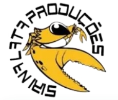

Um projeto social dedicado ao desenvolvimento humano, fortalecimento comunitário e oportunidades para todos.
Apoie nosso projetoA Associação Siri na Lata nasce com o propósito de promover ações sociais, esportivas e educativas, utilizando o esporte como ferramenta de transformação social.
Nosso objetivo é criar oportunidades, estimular valores como respeito, disciplina, cooperação e fortalecer vínculos dentro da comunidade.
Atividades esportivas voltadas ao desenvolvimento físico, social e emocional dos participantes.
Projetos educativos que incentivam aprendizagem, cidadania e crescimento pessoal.
Atividades que aproximam pessoas e fortalecem a comunidade.
Espaço reservado para fotos dos projetos, eventos, participantes e ações da associação.
Área reservada para divulgação dos apoiadores e parceiros.
WhatsApp: (82) 99113-9971